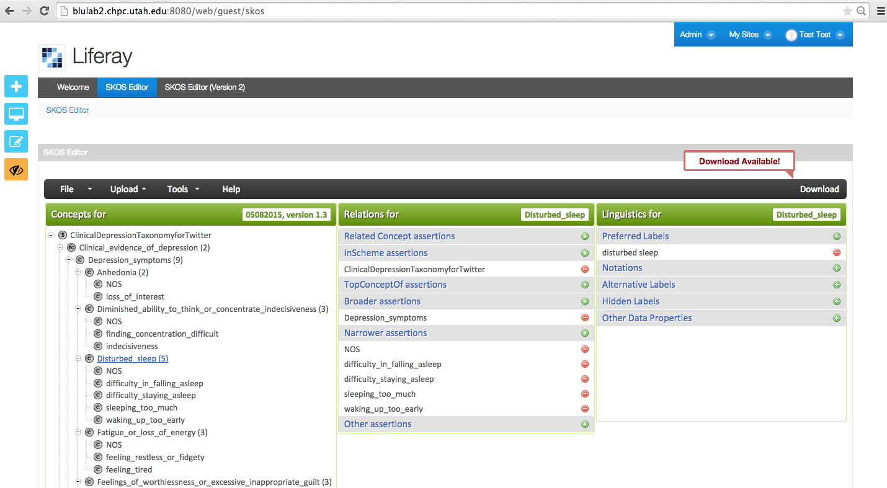
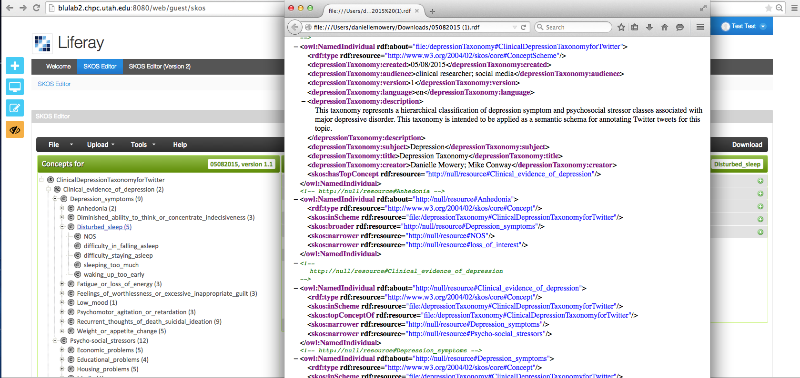

Downloading the edited SKOS thesaurus
The edited thesaurus can be downloaded using the “Download” button (top right corner of the interface – see below).

The downloaded OWL/XML is generated using the SKOS and OWL APIs (see screenshot below).

Created with the Personal Edition of HelpNDoc: Full-featured EBook editor